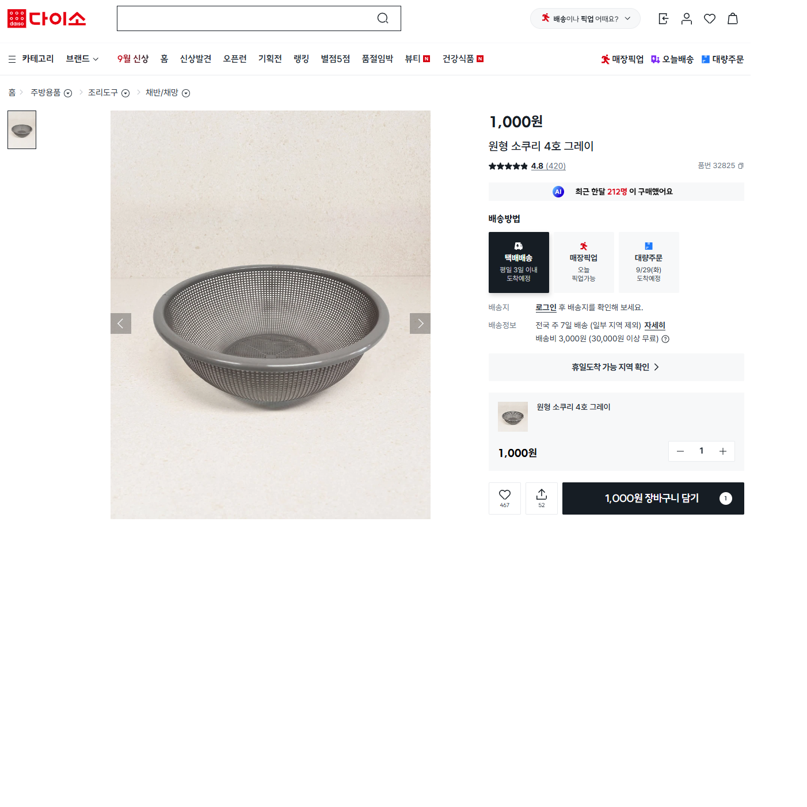
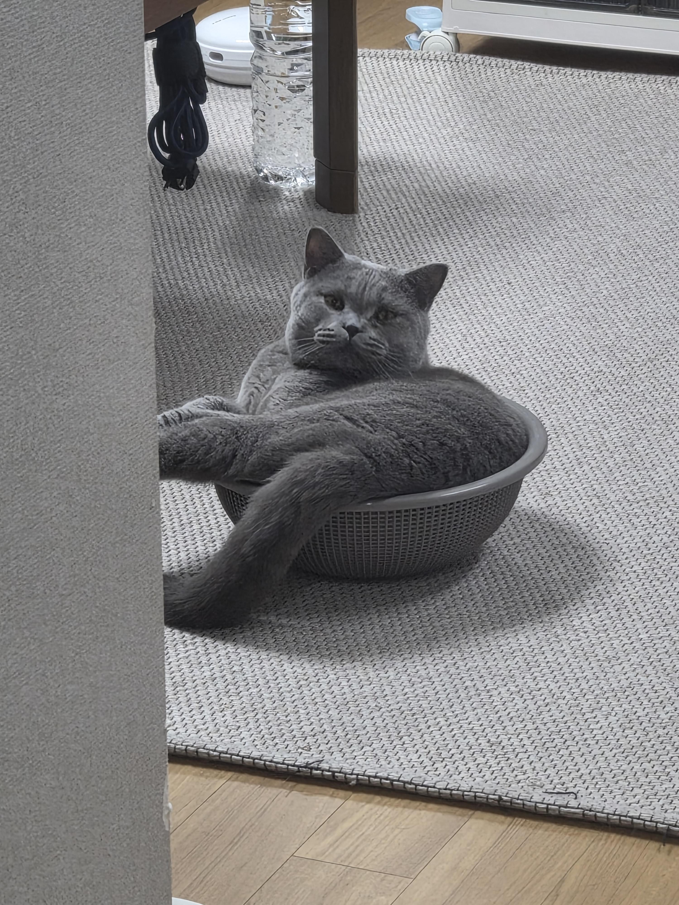
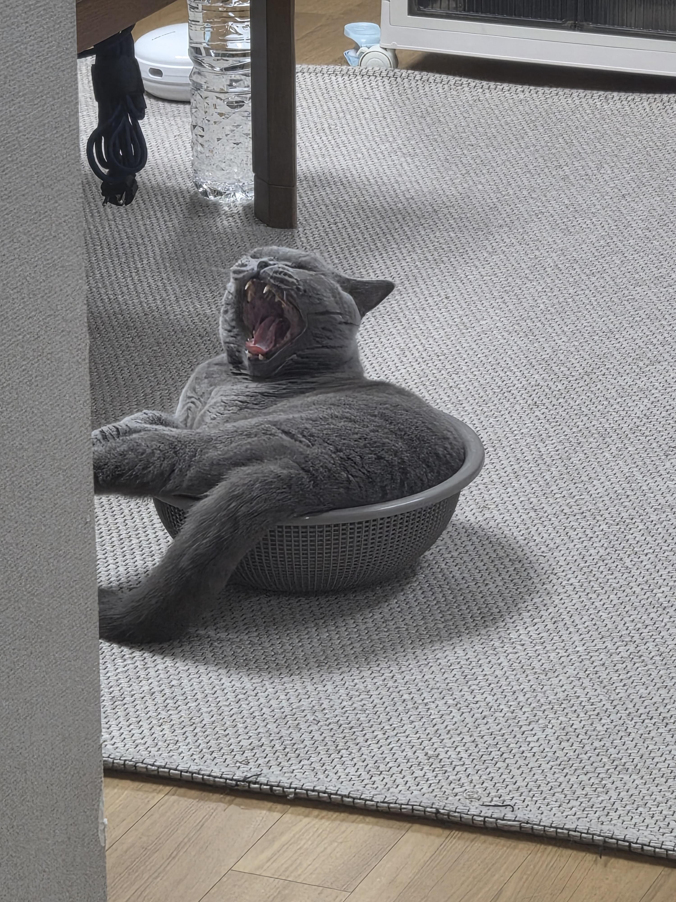
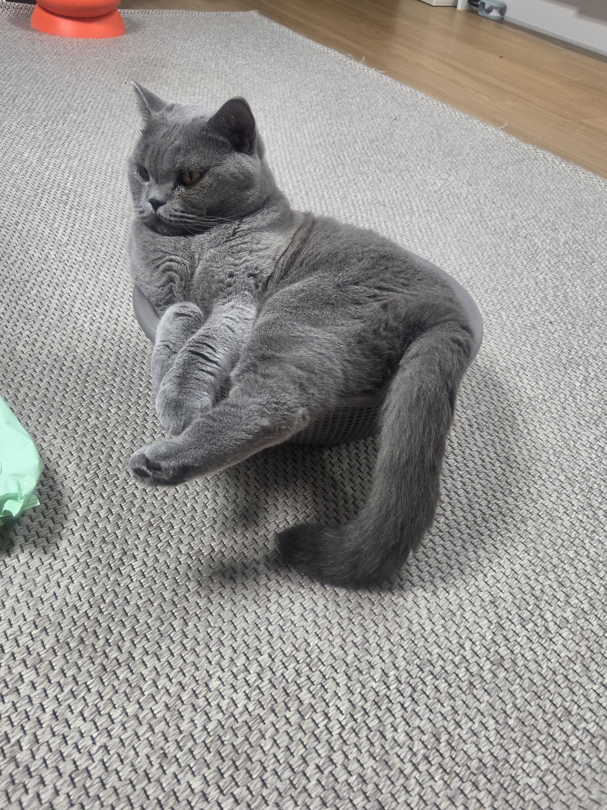
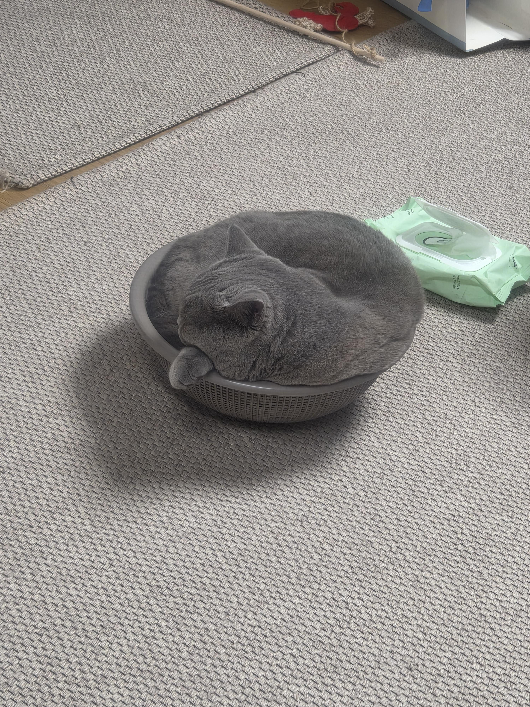
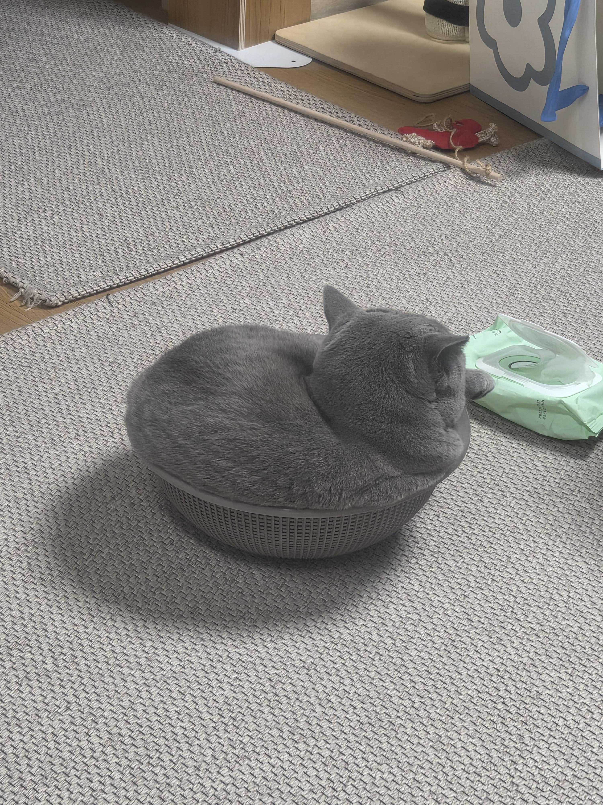

고것은 소쿠리
좁은 공간을 좋아하는 고양이가 환장한다나...
그래서 사봤는데 냄새만 맡고 가버림
1,000원 버린셈 치고 씻고 나왔더니





미친 애옹이 진짜 ㅋㅋㅋㅋㅋ

고것은 소쿠리
좁은 공간을 좋아하는 고양이가 환장한다나...
그래서 사봤는데 냄새만 맡고 가버림
1,000원 버린셈 치고 씻고 나왔더니





미친 애옹이 진짜 ㅋㅋㅋㅋㅋ
김도 커비도 소쿠리에 넣던데
나도 냥이 키우고파..
색상 깔맞춤 편-안
소쿠리가 좀 작은거 아니냐ㅋㅋ
묘지 주인인줄
좀 작아요
묘체공학적 디자인
커여워.. 이러면 안사볼수가없지
천원으로 둘다 행복해졌네